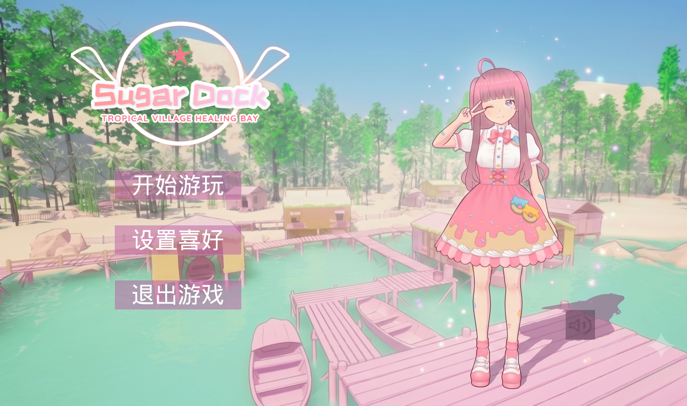
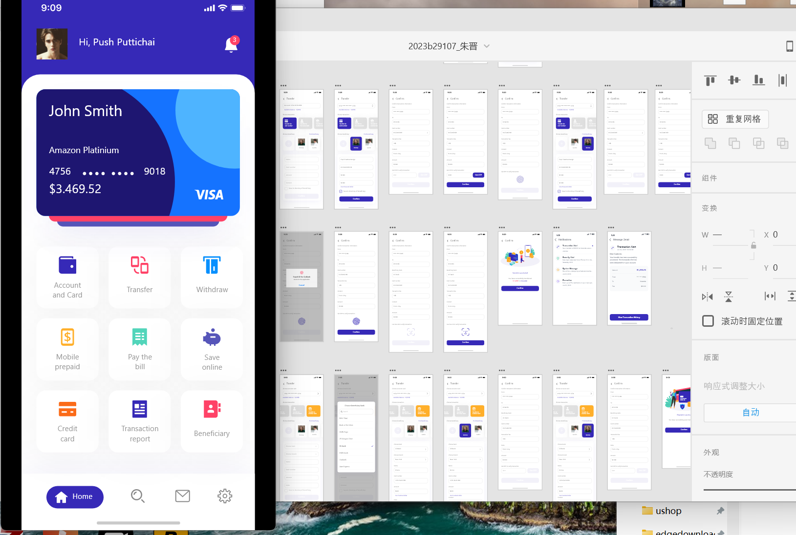

求职意向：虚幻UE工程 / UI设计师
我是数媒技术专业大三在读的学生。平时最喜欢钻研虚幻引擎的交互机制和实际界面落地。在写代码和做设计时，我更愿意去探究底层的实现原理，在保证美观的同时，考虑如何让程序同学更方便地对接，避免画不实用的“飞机稿”。虽然目前还是个新人，但我有着不怕踩坑的耐心，乐于花时间琢磨每一个像素的对齐和弹性微反馈，希望能动手把界面调得好用又好看。
主要学习：虚幻引擎开发、用户体验设计流程、移动端UI设计实践、PBR材质流、三维视觉渲染、网页前端开发基础。
• 三维场景里的UI控制：试过让三维场景里的天气和光影随着UI按键点击直接发生改变，能让手绘或科技风的界面平滑地融进游戏空间里。
• 大屏信息整理：习惯用结构清晰的卡片布局来整理复杂数据，不管是学校能耗还是监控信息，都能排得整整齐齐、清晰易读。
• 自控且耐心：无论是界面的像素级对齐还是蓝图事件在多端原型下的跳转连贯，我都会耐心地在开发对接前反复调整和实机验证。
• 自学和尝试AI大模型：平时很喜欢折腾新事物，经常尝试用各种 AI 大模型（像 ChatGPT、Claude、Gemini 等）来帮自己查技术资料、找设计灵感，甚至协助写网页（比如这个网页就是跟 AI 协作一起边学边改出来的）。虽然目前还在摸索阶段，但我觉得积极去用新工具能大大提高我的自学和干活效率。
做了一个对称的双翼看板。点击侧边面板可以一键切换晴天、阴天、雨天和黑夜，而且镜头画面也会跟着平滑拉近拉远。

用的是清新舒服的马卡龙粉紫配色。通过调整按钮的半透明度加上白色边框，让整个主菜单在3D游戏背景里看得很清楚，不刺眼。

规范地做了忘记/修改密码、多国语言切换、汇率折算以及转账页面的动效设计。背景用大面积干净的白色，让界面看起来很轻巧。